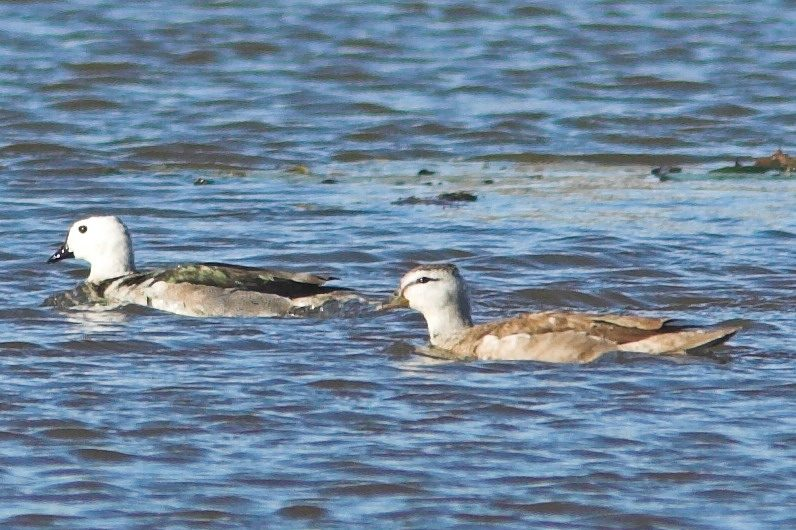

गिर्रीCotton Pygmy-goose
Nettapus coromandelianus · Anatidae · BRD-0096

- Scientific nameवैज्ञानिक नाम
- Nettapus coromandelianus (Gmelin, 1789)
- Familyकुल
- Anatidae
- Hindiहिंदी
- गिर्री
- Local namesस्थानीय नाम
- girri, ghirri, girria, cotton teal, pygmy goose
- Status hereयहाँ की स्थिति
- native
- Movementआवागमन
- Resident, here all year
- IUCNIUCN
- LC
- Reviewसमीक्षा
- audited and independently read
When to look कब देखें
Present all year.साल भर मौजूद।
Tell it apart from इनसे अलग पहचानें
गिर्री / Cotton Pygmy-goose
Nettapus coromandelianus (Gmelin, 1789) — Anatidae
गिर्री — पूर्वी उत्तर प्रदेश की तालाबों और कमल वाले जलाशयों की सबसे छोटी हंस, जो पूरे साल रहती है। इसके शरीर पर सफेद और भूरे रंग का जाल-जैसा डिज़ाइन होता है, और बाहर से "गिर्री" (कपास के बीज की तरह) लगता है — इसीलिए यह नाम है। नर और मादा में बहुत अंतर होता है। यह कभी-कभी दूसरी चिड़ियों के घोंसलों में अंडे देती है।
Quick Identification त्वरित पहचान
| Feature | Description |
|---|---|
| Size | Smallest duck species; 30–35 cm long |
| Male plumage | Dark glossy green back; white face and neck; black throat; white chest with black spots |
| Female plumage | Drab brown; whitish belly; no spots |
| Bill | Small, dark; pointed |
| Legs | Yellowish-green |
| Behaviour | Dabbles on vegetation; very small and unobtrusive |
| Habitat | Always on water with dense vegetation |
Field tip: The Cotton Pygmy-goose is the smallest duck in the region. Males are brightly patterned with white and black; females are plain brown. Look for them on lotus ponds and small tanks with floating vegetation. Males are distinctive; females require close observation.
हिंदी — कैसे पहचानें:
सबसे छोटी हंस; पूरे साल रहती है।
नर का सफेद चेहरा और काली गर्दन।
मादा सादा भूरी।
कमल की पत्तियों के पास दिखता है।
Morphology आकारिकी
Biometrics:
| Measurement | Range |
|---|---|
| Total length | 300–350 mm |
| Wing (flattened chord) | 130–150 mm |
| Tail | 60–80 mm |
| Bill | 28–35 mm |
| Tarsus | 25–30 mm |
| Weight | 200–280 g |
Size: 30–35 cm long; wingspan 50–60 cm. Weight 200–280 g. The smallest waterfowl in the region.
Plumage (male): Highly distinctive. Back and upper parts glossy dark green or black. Head white with black cap and black marks around ear. Throat black. Neck white. Breast white with black spots (variable density). Belly white. Back has scalloped black and white pattern in breeding season.
Plumage (female): Uniform drab brown above; white or buff underparts. No distinctive markings. Much duller than male.
Bill: Small, dark grey, pointed.
Legs and feet: Yellowish-green.
Eyes: Dark; positioned high on head.
Sexes: Highly dimorphic. Males strikingly patterned; females plain.
Juveniles: Similar to females but duller.
Vocalisations. Quiet duck. Call repertoire:
- Contact call: Soft, faint whistles; frequency 1.5–2.0 kHz.
- Drake call: Occasionally produces faint whistles.
- Escape call: Sharp, high-pitched peep when alarmed.
हिंदी: बहुत खामोश पक्षी है। कम आवाज़ निकालता है।
Behaviour & Ecology व्यवहार और पारिस्थितिकी
Aquatic forager: Cotton Pygmy-geese feed on:
- Aquatic plant seeds (lotus, water lily)
- Floating vegetation and shoots
- Aquatic insects and small invertebrates
- Duckweed and algae
Feeding technique: Dabbles at water surface or tips up in shallow water. Never dives. Gleans vegetation and small prey.
Social behaviour: Keeps to pairs or small groups; rarely forms large flocks. Monogamous, pairs remain together year-round.
Habitat specialization: Almost always found on water with dense aquatic vegetation. Avoids open water.
Swimming: Rides high on water; swift and agile swimmers.
Nesting behaviour: Uses nest-cavities of other birds, particularly those of tree-holes or old nests. Will use artificial nest-boxes if provided.
Temporal pattern: Year-round resident; more vocal and active during breeding season (May–August).
हिंदी: कमल वाले तालाबों में जोड़ों में दिखता है। बहुत छोटा और तेज़ तैराक है।
Life Cycle / Phenology जीवन चक्र
Resident: Present year-round in eastern UP.
Breeding: May–August (monsoon and early post-monsoon). Two breeding seasons recorded in some areas.
Nesting: Cavity nester. Uses holes in riverside trees, old nests of other species, or willows. Does not build its own nest.
Eggs: 8–10 white eggs. Only the female incubates, ~22 days.
Chicks: Precocial; leave nest within hours of hatching. Fed by mother initially. Fledge at ~6 weeks.
Roosting: On floating vegetation at night. Often concealed among plants.
Breeding distribution: Throughout eastern UP wherever suitable lotus ponds or vegetated wetlands exist.
हिंदी: साल भर रहता है। मई से अगस्त तक घोंसला बनाता है। दूसरी चिड़ियों के खाली घोंसलों में रहता है।
Host Plants or Prey आहार
| Food Type | Examples | Feeding Behaviour |
|---|---|---|
| Aquatic plant seeds | Lotus, water lily | Pick from water surface and leaves |
| Floating vegetation | Duckweed, algae | Graze on surface |
| Aquatic insects | Small beetles, midges | Pick from vegetation |
| Shoots | Young reeds, sedges | Browse on water plants |
हिंदी: कमल के बीज और पानी की घास खाता है। कीड़े भी खाता है।
Predators / Natural Enemies शत्रु
- Avian predators: Fish Eagles, Marsh Harrier, herons, larger eagles (rare)
- Eggs and young: Snakes, crows, monitor lizards, otters
- Adults: Large snakes, occasionally raptors
हिंदी: बड़ी शिकारी चिड़ियाँ और साँप इसके बच्चों को खतरे में डालते हैं।
Agricultural / Human Relevance कृषि प्रासंगिकता
Protected species: Listed in Schedule IV of the Wildlife (Protection) Act 1972, amended 2022. Fully protected; hunting prohibited.
Wetland indicator: Its presence indicates healthy, well-vegetated wetland ecosystems with diverse aquatic plants.
Minor benefit: Feeds on aquatic insects, providing minor pest control.
Cultural references: Known locally as गिर्री (girri), derived from its cotton-like appearance.
Conservation importance: Dependent on wetlands; a good indicator of wetland health and quality.
uses: [] caution: [protected]
हिंदी: यह विधि अधिनियम 1972 की अनुसूची IV के अंतर्गत संरक्षित है।
Expected Locally स्थानीय रूप से अपेक्षित
This species is NOT a field record. The description below indicates where Cotton Pygmy-geese should be looked for based on published information.
Year-round presence: Expected throughout eastern UP wherever suitable lotus ponds, freshwater marshes, and vegetated water bodies exist.
Habitat preference: Strictly dependent on water with dense aquatic vegetation. Avoids open lakes.
Peak visibility: More visible and vocal during breeding season (May–August).
Nearest published record: The Ghat Lakes near Balrampur and similar shallow vegetated wetlands throughout the Ghaghra-Rapti floodplain support resident populations.
What a first record would be: A dated photograph clearly showing the distinctive patterned male or brown female in a specific location, with GPS and date, submitted through the About page.
हिंदी: साल भर कमल वाले तालाबों में देखा जा सकता है। पहला रिकॉर्ड तस्वीर और तारीख के साथ चाहिए।
Distribution वितरण
Global range: Indian subcontinent, Southeast Asia. Resident populations throughout suitable wetlands.
In India: Resident throughout, with some regional movements seasonally.
In Uttar Pradesh: Widespread on suitable wetlands, particularly eastern districts.
In Basti district / eastern UP: Resident on lotus ponds and vegetated marshes throughout the year.
Research Questions शोध प्रश्न
- What are the nesting preferences of Cotton Pygmy-geese, and how do they compete with other cavity-nesting birds?
- How does vegetation density and diversity of water bodies affect pygmy-goose population density?
- कमल के पानों के डिज़ाइन और बनावट को इस चिड़िया की कदाकार संरचना ने कैसे प्रभावित किया है?
- What is the breeding productivity and chick survival rate in eastern UP wetlands?
- नरों और मादाओं के बीच व्यवहार में क्या अंतर है, और क्या उनकी भूमिकाएँ अलग हैं?
- How are populations of Cotton Pygmy-geese affected by water-level fluctuations and wetland management practices?
Similar Species मिलती-जुलती प्रजातियाँ
| Species | Key Difference | Hindi | Field Rule | |
|---|---|---|---|---|
| [[common_teal\ | Common Teal]] (Anas crecca) | Larger (34–38 cm); male has chestnut head | छोटी मुर्गाबी | Pygmy-goose is smaller with white face and black spots; Teal has chestnut head. |
| [[mallard\ | Mallard]] (Anas platyrhynchos) | Much larger (56–65 cm) | दुग्ध हंस | Mallard is nearly twice the size. |
| [[little_cormorant\ | Little Cormorant]] (Microcarbo niger) | Different bird family; black all over; dives | पनकौवा | Cormorant is black, much larger, and dives. |
Field rule: The Cotton Pygmy-goose is the smallest duck and the only one with a distinctly patterned male (white face with black spots). If on vegetation-dense water, small size, and male pattern is diagnostic.
Taxonomy & Classification वर्गीकरण
Original description. Described by Johann Friedemann Wilhelm Gmelin in 1789 in Systema Naturae, 13th edition, volume 2, page 530, as Anas coromandelianus. Type locality is Coromandel (Chennai), South India.
Subspecies. Monotypic. Nettapus coromandelianus coromandelianus. No subspecies are recognised.
Family and order placement. Order Anseriformes; family Anatidae. Genus Nettapus contains three species of pygmy-geese found in southern Africa, Asia, and Australia.
Phylogenetic notes. Nettapus is a distinct genus within Anatidae; molecular studies confirm its separation from Anas. The specialized feeding and nesting adaptations represent a unique ecological niche within dabbling ducks.
IUCN status rationale. Least Concern globally. Populations stable; widespread in suitable habitats. Protected under Schedule IV of Wildlife Protection Act 1972 (amended 2022) in India.
हिंदी: भारत की मूल निवासी चिड़िया है। पूरे भारत में पाई जाती है।
Photo Gallery फोटो गैलरी
No photos yet — add field photos to media/species/cotton_pygmy_goose/ and run node scripts/sync_photos.js.
Wanted photos:
- Male on water (distinctive white and black pattern)
- Female in brown plumage
- Pair together
- On lotus leaves
- Cavity nesting site
- Chicks or young birds
References संदर्भ
- Gmelin, J. F. (1789). Systema Naturae, 13th edn. Vol. 2, p. 530.
- Ali, S. & Ripley, S. D. (1968). Handbook of the Birds of India and Pakistan. Vol. 1. Oxford University Press, Delhi. Pp. 411–413.
- Cramp, S. & Simmons, K. E. L. (1977). Handbook of the Birds of Europe, the Middle East and North Africa. Vol. 1. Oxford University Press. Pp. 453–460.
- Kear, J. (ed.) (2005). Ducks, Geese and Swans. Vol. 1. Oxford University Press. Pp. 234–238.
- GBIF Occurrence Data — Nettapus coromandelianus, India. GBIF taxon key: to be filled.
- IUCN Red List (2023). Nettapus coromandelianus — BirdLife International. Status: Least Concern.
Source file: species/fauna/birds/cotton_pygmy_goose.md